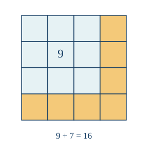
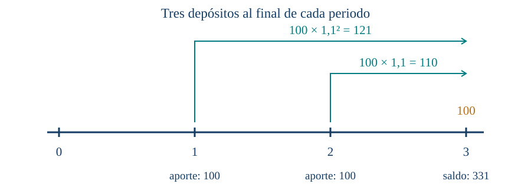

Sucesiones, progresiones y matemática financiera
← Expresiones racionales, factorización y restricciones · Índice del libro · Siguiente →
Para preparar un auditorio necesitamos saber cuántas sillas habrá en cada fila y cuántas cabrán en total. Si la primera fila tiene doce y cada nueva fila agrega tres, podemos continuar el recuento: quince, dieciocho, veintiuna. La disposición permite anticipar cualquier fila sin construir todas las anteriores; basta reconocer cuántos aumentos separan su posición de la primera. Sumar las cantidades de todas las filas requerirá otra observación sobre la misma organización.
En otros procesos se repite una multiplicación. Un saldo que recibe intereses proporcionales a su valor cambia de manera distinta de uno al que se añade siempre una cantidad fija, porque el aumento siguiente depende de lo que ya se acumuló. Las sucesiones permitirán describir ambos procesos por etapas y distinguir el término que ocupa una posición del total de los términos. Al aplicar sus sumas a cuotas y depósitos, tendremos que fijar además cuándo se efectúa cada pago: un período de diferencia cambia el tiempo durante el que actúan los intereses.
Una fila más en el auditorio
Problema 1. La posición de una fila y su cantidad de sillas
Enunciado. La primera fila tiene doce sillas y cada fila siguiente tiene tres más que la anterior. Escribe una regla para la cantidad de la fila \(n\) y encuentra la cantidad de la décima fila.
Solución. Numeramos las filas desde \(n=1\). Las primeras cantidades son 12, 15, 18 y 21. Para llegar a la fila \(n\) desde la primera se realizan \(n-1\) aumentos de tres, por lo que \(a_n=12+3(n-1)\). La décima tiene \(12+3\cdot9=39\) sillas. El índice 10 identifica la posición; el término \(a_{10}=39\) expresa la cantidad que le corresponde. Contar diez aumentos habría situado el resultado en la fila siguiente.
Una sucesión real asigna un número real a cada índice de un conjunto ordenado de enteros consecutivos. Aquí trabajaremos principalmente con índices \(1,2,3,\ldots\), y en los modelos de evolución usaremos también \(0,1,2,\ldots\) para incluir el estado inicial. Escribimos \(a_n\) para el término de índice \(n\). Una regla explícita lo obtiene directamente del índice; una recurrencia indica cómo calcularlo a partir de términos anteriores y necesita suficientes condiciones iniciales.
Problema 2. Cuatro datos permiten más de una continuación
Enunciado. Los primeros cuatro términos son 2, 5, 8 y 11. Propón dos reglas que los produzcan y decide si esos datos determinan el quinto término.
Solución. La regla \(a_n=3n-1\) produce los cuatro valores y da \(a_5=14\). Consideremos también \[b_n=3n-1+(n-1)(n-2)(n-3)(n-4).\] Para \(n=1,2,3,4\), uno de los factores del producto es cero, de modo que \(b_n=a_n\). Para \(n=5\), el producto vale 24 y \(b_5=38\). Ambas reglas cumplen los datos. Para elegir una continuación necesitamos otra condición; por ejemplo, exigir que cada incremento sea tres selecciona la primera. Una lista finita aporta información, y la regla adoptada determina cómo se prolonga.
Añadir siempre la misma cantidad
La condición \(a_{n+1}=a_n+d\) define una progresión aritmética de diferencia \(d\). Repetirla da \(a_n=a_1+(n-1)d\). La fórmula se justifica por inducción: vale para \(n=1\); si vale para \(n\), añadir \(d\) produce \(a_{n+1}=a_1+nd\), que es la expresión del índice siguiente. El argumento incluye diferencias positivas, cero y negativas.
Problema 3. Reconstruir la diferencia desde dos posiciones
Enunciado. En una progresión aritmética, \(a_4=17\) y \(a_9=37\). Encuentra \(d\), \(a_1\) y \(a_{12}\).
Solución. Entre los índices 4 y 9 hay cinco incrementos, por lo que \(37-17=5d\) y \(d=4\). Desde el primer término al cuarto hay tres incrementos: \(a_1=17-3\cdot4=5\). La regla es \(a_n=5+4(n-1)\), y \(a_{12}=49\). Se comprueban \(a_4=5+12=17\) y \(a_9=5+32=37\). Las dos condiciones determinan una diferencia única y después un primer término único.
Problema 4. El primer índice que alcanza una meta
Enunciado. Una sucesión comienza en 7 y aumenta cinco en cada paso. ¿Cuál es el primer índice \(n\ge1\) cuyo término es al menos 52?
Solución. La regla es \(a_n=7+5(n-1)\). La condición exige \(7+5(n-1)\ge52\), equivalente a \(n\ge10\). El menor índice entero admisible es 10: \(a_{10}=52\) y \(a_9=47\). Como la diferencia es positiva, los términos anteriores son menores. El examen de índices enteros permite convertir la desigualdad en una primera posición concreta.
Sumar un recorrido entero
Problema 5. Emparejar los extremos de una suma
Enunciado. Calcula \(1+2+\cdots+100\) y justifica el procedimiento.
Solución. Llamemos \(S\) a la suma. Escrita en orden inverso es \(100+99+\cdots+1\). Al sumar ambas escrituras, cada una de las cien posiciones aporta 101. Así, \(2S=100\cdot101\) y \(S=5050\). El razonamiento cuenta cien sumandos en cada escritura; el factor dos aparece porque hemos sumado dos copias de la misma cantidad.
Para una progresión aritmética finita de \(n\) términos, emparejar las dos escrituras del mismo modo produce siempre \(a_1+a_n\) en cada posición. Por tanto, \[S_n=a_1+\cdots+a_n=\frac{n(a_1+a_n)}2 =\frac n2\bigl(2a_1+(n-1)d\bigr).\] Esta derivación también sirve cuando \(n\) es impar: estamos sumando dos copias completas y después dividiendo por dos.
Problema 6. La capacidad del auditorio
Enunciado. El auditorio del problema 1 tiene veinte filas. ¿Cuántas sillas contiene?
Solución. El último término es \(a_{20}=12+3\cdot19=69\). La suma de las veinte filas es \(20(12+69)/2=810\). Podemos comprobar la estructura separando las doce sillas de cada fila y los aumentos: \(20\cdot12+3(0+1+\cdots+19)=240+3\cdot190=810\). El índice 20 cuenta filas; 69 cuenta las sillas de la última fila; 810 cuenta el total.
Problema 7. Un cuadrado construido con números impares
Enunciado. Encuentra la suma de los primeros \(n\) impares positivos y explica su relación con un cuadrado.
Solución. Los impares forman la progresión \(1,3,5,\ldots,2n-1\). La fórmula aritmética da \(S_n=n[1+(2n-1)]/2=n^2\). También podemos construir cuadrados: pasar de lado \(n-1\) a lado \(n\) añade una fila de \(n\) casillas y una columna de \(n-1\), en total \(2n-1\). La identidad \(n^2-(n-1)^2=2n-1\) justifica cada ampliación. Partiendo de una casilla, los aumentos impares forman el cuadrado de \(n^2\) casillas.

Propiedades de una progresión aritmética
| Propiedad | Fórmula y condiciones de uso |
|---|---|
| Diferencia constante | \(a_{n+1}=a_n+d\), con \(d\) real y primer término fijado. Esta es la condición definitoria. |
| Término explícito | Para índices \(n\ge1\), \(a_n=a_1+(n-1)d\). |
| Diferencia entre posiciones | \(a_n-a_m=(n-m)d\), para índices admisibles \(m,n\). |
| Suma finita | Para \(n\ge1\), \(S_n=n(a_1+a_n)/2=n[2a_1+(n-1)d]/2\). |
Pruebas. Véase «Diferencias constantes y sumas aritméticas» en el apéndice.
Multiplicar siempre por el mismo factor
Una progresión geométrica satisface \(a_{n+1}=ra_n\), con razón real \(r\) y primer término fijado. Si \(r\ne0\), repetir la relación produce \(a_n=a_1r^{n-1}\) para \(n\ge1\). Para \(r=0\), la recurrencia entrega \(a_1,0,0,\ldots\); escribir aparte el primer término evita introducir \(0^0\). La recurrencia conserva su sentido incluso si el primer término es cero.
Problema 8. Una cantidad que se duplica
Enunciado. Una progresión geométrica empieza en 3 y tiene razón 2. Encuentra su sexto término.
Solución. La regla es \(a_n=3\cdot2^{n-1}\). El sexto término es \(3\cdot2^5=96\). El recorrido \(3,6,12,24,48,96\) lo comprueba. Se realizan cinco multiplicaciones desde el primer término al sexto. La diferencia entre términos sucesivos va cambiando; lo que permanece constante es el factor dos.
Problema 9. Un recorrido de divisiones
Enunciado. La sucesión \(81,27,9,3,\ldots\) se obtiene dividiendo cada término por tres. Encuentra su regla y el quinto término.
Solución. Dividir por tres equivale a multiplicar por \(r=1/3\). Así, \(a_n=81(1/3)^{n-1}\) y \(a_5=81/81=1\). Todos los términos son positivos y cada paso reduce su valor, porque se multiplica por un número positivo menor que uno. La razón se comprueba con \(27/81=9/27=3/9=1/3\); esas divisiones existen porque los términos usados son no nulos.
Problema 10. Un factor negativo cambia los signos
Enunciado. Una progresión comienza en 5 y tiene razón \(-2\). Encuentra sus cinco primeros términos y estudia si es creciente.
Solución. Los términos son \(5,-10,20,-40,80\). La fórmula \(a_n=5(-2)^{n-1}\) explica la alternancia de signos. Sus valores absolutos se duplican, pero la sucesión completa alterna descensos y ascensos: pasa de 5 a \(-10\) y después a 20. Por tanto, carece de monotonía en todo su recorrido. El crecimiento del valor absoluto describe una propiedad diferente del crecimiento de los términos reales.
Problema 11. Una recurrencia porcentual con estado inicial
Enunciado. Una cantidad vale 200 al inicio y aumenta un 10 % en cada periodo. Escribe su recurrencia y calcula el valor al terminar tres periodos.
Solución. El estado inicial lleva índice cero: \(u_0=200\). Cada periodo multiplica por \(1+0{,}10=1{,}10\), así que \(u_{n+1}=1{,}10u_n\). Los valores son \(u_1=220\), \(u_2=242\) y \(u_3=266{,}2\). La forma explícita es \(u_n=200(1{,}10)^n\). Hay tres factores porque el índice cuenta periodos transcurridos desde el estado cero. El segundo incremento es 22 y el tercero 24,2: el porcentaje se aplica al valor que existe al comenzar cada periodo.
Problema 12. Alcanzar un umbral en pasos enteros
Enunciado. Una cantidad comienza en 100 y se duplica al finalizar cada periodo. ¿Cuántos periodos deben transcurrir para alcanzar por primera vez al menos 1600?
Solución. Con \(u_0=100\), la regla es \(u_n=100\cdot2^n\). Los primeros estados son \(100,200,400,800,1600\). Se alcanza el umbral al terminar cuatro periodos. La sucesión es estrictamente creciente porque cada término positivo se duplica; todos los anteriores al cuarto están por debajo de 1600. Para este umbral basta la comparación exacta de potencias, sin aproximar el índice.
Propiedades de una progresión geométrica
| Propiedad | Fórmula y condiciones de uso |
|---|---|
| Razón constante | \(a_{n+1}=ra_n\), con \(r\) real y primer término fijado. Para \(r=0\), la sucesión es \(a_1,0,0,\ldots\). |
| Término explícito | Si \(r\ne0\), \(a_n=a_1r^{n-1}\) para \(n\ge1\). Con índice inicial cero, \(u_n=u_0r^n\) para \(n\ge0\). |
| Recuperación de la razón | \(r=a_{n+1}/a_n\) en cualquier posición con \(a_n\ne0\). Una sucesión nula satisface la recurrencia para cualquier razón. |
| Signos y crecimiento | Con \(a_1>0\), \(r>1\) da crecimiento y \(0<r<1\) da decrecimiento; una razón negativa alterna signos si \(a_1\ne0\). |
Pruebas. Véase «Productos repetidos y sumas geométricas» en el apéndice.
Una suma que se cancela al desplazarla
Problema 13. Sumar diez potencias consecutivas
Enunciado. Calcula \(1+2+2^2+\cdots+2^9\) sin sumar cada término por separado.
Solución. Llamamos \(S\) a la suma. Multiplicar por dos produce \(2S=2+2^2+\cdots+2^{10}\). Al restar \(S\) de \(2S\), todos los términos interiores se cancelan: \(S=2^{10}-1=1023\). Hay diez sumandos, desde el exponente cero hasta el nueve. El último término vale 512, mientras que la suma incluye todos los anteriores.
En general, al multiplicar \(S_n=a+ar+\cdots+ar^{n-1}\) por \(r\), cada término pasa a ocupar la posición del siguiente. Las dos sumas comparten así todos los términos intermedios; al restarlas quedan el primero de la suma original y el último de la desplazada: \(S_n-rS_n=a-ar^n\). Si \(r\ne1\), dividir por \(1-r\) permite despejar \[S_n=a\frac{1-r^n}{1-r}.\] La cancelación depende de la posición de los términos y funciona también cuando la razón es negativa. Para \(r=1\) todos los sumandos valen \(a\), por lo que los contamos directamente y obtenemos \(na\).
Problema 14. La razón que exige una rama propia
Enunciado. Una progresión geométrica tiene primer término 5 y razón 1. Encuentra la suma de sus doce primeros términos.
Solución. Todos los términos valen 5. La suma es \(12\cdot5=60\). La fórmula con denominador \(1-r\) produciría \(0/0\) al sustituir \(r=1\) y debe reservarse a su dominio. La recurrencia y la suma original sí determinan el resultado en esta rama.
Problema 15. Sumar términos de signos alternados
Enunciado. Calcula \(3-6+12-24+48\) mediante una suma geométrica.
Solución. Hay cinco términos, con \(a=3\) y \(r=-2\). La fórmula da \(S_5=3[1-(-2)^5]/[1-(-2)]=3\cdot33/3=33\). La suma directa \(3-6+12-24+48=33\) confirma el valor. El exponente 5 cuenta sumandos; el último término usa exponente 4 en \(3(-2)^4\).
Problema 16. Aportar una misma cantidad sin interés
Enunciado. Se depositan cincuenta unidades monetarias al final de cada mes, durante seis meses, en una cuenta sin intereses ni cargos. ¿Cuánto hay inmediatamente después del sexto depósito?
Solución. Cada depósito aporta 50 y ninguno cambia de valor. El saldo es \(6\cdot50=300\). Si \(S_n\) es el saldo después del depósito \(n\), la recurrencia es \(S_0=0\), \(S_{n+1}=S_n+50\). Al haber fijado el momento de observación, contamos exactamente seis aportes. Cuando incorporemos intereses, la fecha de cada aporte determinará cuántos periodos puede crecer.
Propiedades de las sumas geométricas finitas
| Propiedad | Fórmula y condiciones de uso |
|---|---|
| Razón distinta de uno | Para \(n\ge1\) y \(r\ne1\), \(a+ar+\cdots+ar^{n-1}=a(1-r^n)/(1-r)\). El término inicial se escribe \(a\) también si \(r=0\). |
| Razón uno | Para \(r=1\), la suma de \(n\) términos iguales a \(a\) es \(na\). |
| Conteo desde exponente cero | Para \(r\ne0\), la suma de \(r^0\) hasta \(r^m\) contiene \(m+1\) términos. En razón uno vale \(m+1\); en las otras razones se aplica la fórmula con \(n=m+1\). |
Pruebas. Véase «Productos repetidos y sumas geométricas» en el apéndice.
El tiempo forma parte de una tasa
En los modelos siguientes, las tasas y cantidades son hipotéticas. Trabajaremos con periodos iguales, tasas constantes y ausencia de comisiones, impuestos y otros cargos. Cada cálculo describe el modelo declarado. La información de una operación real debe precisar además las fechas y todos sus costos.
Un capital inicial \(C\) a interés simple recibe en cada periodo un interés \(Ci\) calculado sobre el capital inicial. Después de \(n\) periodos vale \(C(1+ni)\). A interés compuesto, el interés de cada periodo se calcula sobre el saldo al comenzar ese periodo: \(C_{n+1}=(1+i)C_n\), de donde \(C_n=C(1+i)^n\). La tasa \(i\) se escribe en forma decimal y corresponde a un periodo concreto.
Problema 17. Dos bases para calcular el interés
Enunciado. Compara un capital de 1000 unidades monetarias durante tres periodos, al 10 % por periodo, con interés simple y compuesto.
Solución. En el modelo simple, cada periodo añade \(1000\cdot0{,}10=100\); los saldos son 1100, 1200 y 1300. En el compuesto, los saldos son \(1000\cdot1{,}10=1100\), después 1210 y finalmente 1331. Los intereses del segundo y tercer periodo son 110 y 121 porque su base es el saldo actualizado. La diferencia final es 31. Ambos modelos coinciden al terminar el primer periodo y después siguen las reglas de acumulación que acabamos de definir.
Problema 18. Una tasa mensual y su efecto anual
Enunciado. Una tasa efectiva mensual del 1 % se aplica durante doce meses con capitalización mensual. Encuentra la tasa efectiva de esos doce meses y compárala con el 12 % que resulta de sumar las tasas mensuales.
Solución. Cada mes multiplica el saldo por \(1{,}01\). Los doce meses lo multiplican por \((1{,}01)^{12}\). La tasa efectiva del conjunto es \((1{,}01)^{12}-1\), aproximadamente \(0{,}126825\), es decir, \(12{,}6825\%\). El 12 % corresponde al incremento de un modelo simple con doce aplicaciones sobre la misma base inicial. La capitalización mensual del enunciado fija otra base en cada paso. El periodo y la regla de capitalización permiten interpretar correctamente la tasa.
Problema 19. Recuperar una tasa equivalente
Enunciado. Una tasa efectiva anual del 21 % se desea expresar mediante dos semestres de igual tasa efectiva \(j\). Encuentra \(j\) bajo capitalización semestral.
Solución. El factor anual debe ser \(1{,}21\). Los dos semestres requieren \((1+j)^2=1{,}21\), con \(1+j>0\). La raíz positiva es \(1{,}10\), así que \(j=0{,}10\): un 10 % semestral. La comprobación es \((1{,}10)^2=1{,}21\). La raíz negativa daría un factor semestral negativo y queda fuera del modelo. La equivalencia se refiere al mismo horizonte de un año y a las hipótesis de capitalización fijadas.
Problema 20. Comparar dinero y poder de compra
Enunciado. En un año, un saldo aumenta un 8 % y el precio de una canasta de referencia aumenta un 5 %. ¿En qué porcentaje cambia la cantidad de esas canastas que permite comprar el saldo?
Solución. Si el saldo inicial es \(C>0\) y la canasta cuesta \(P>0\), inicialmente se compran \(C/P\) canastas. Al final se compran \(1{,}08C/(1{,}05P)\). El factor de cambio de la capacidad de compra es \(1{,}08/1{,}05=36/35\). La variación relativa es \(1/35\), aproximadamente \(2{,}8571\%\). Restar ocho y cinco ofrece una aproximación de tres puntos porcentuales; el cociente de factores entrega el resultado exacto porque compara el saldo con el nuevo precio de la canasta.
Propiedades de los modelos de tasas
| Propiedad | Fórmula y condiciones de uso |
|---|---|
| Interés simple | Con capital inicial \(C\) y tasa \(i\) por periodo, \(C_n=C(1+ni)\) para \(n\ge0\) entero, bajo acumulación simple y sin movimientos adicionales. |
| Interés compuesto | Con factor \(1+i>0\), \(C_n=C(1+i)^n\) para \(n\ge0\) entero, tasa constante y sin aportes, retiros ni cargos adicionales. |
| Tasa equivalente de varios periodos | Si cada periodo tiene tasa efectiva \(i>-1\), la de \(m\ge1\) periodos es \(j=(1+i)^m-1\). Para recuperar \(i\), se usa la raíz positiva de \(1+j\). |
| Variación real respecto de precios | Para saldo inicial y precio positivos, tasa de crecimiento del saldo \(i>-1\) y variación de precios \(\pi>-1\), la variación de capacidad de compra es \((1+i)/(1+\pi)-1\). |
Pruebas. Véase «Capitalización y comparación de tasas» en el apéndice.
Cada pago tiene una fecha
Para reunir varios depósitos podemos seguir el tiempo de cada uno desde su fecha de ingreso hasta la fecha en que observamos el saldo. El que entra al terminar un periodo empieza a generar intereses en el siguiente; si lo adelantamos al comienzo, recibe un periodo adicional de capitalización. Dibujar una línea de fechas permite contar los factores que corresponden a cada aporte antes de sumarlos. En una deuda seguiremos el mismo cuidado temporal: el modelo calculará primero el interés del periodo y descontará después el pago efectuado a su final.
Problema 21. Tres depósitos con intereses diferentes
Enunciado. Se depositan 100 unidades monetarias al final de cada uno de tres periodos. La cuenta acredita un 10 % por periodo antes del depósito correspondiente. Encuentra el saldo después del tercer depósito y compáralo con tres depósitos realizados al comienzo de esos periodos, observados al terminar el tercero.
Solución. En los depósitos finales, el primero crece durante dos periodos, el segundo durante uno y el tercero durante ninguno. El saldo es \(100(1{,}10)^2+100(1{,}10)+100=121+110+100=331\). La recurrencia \(S_0=0\), \(S_{n+1}=1{,}10S_n+100\) produce 100, 210 y 331, y comprueba las fechas.
Si cada depósito se adelanta al comienzo de su periodo, cada uno gana un factor adicional \(1{,}10\). El saldo final es \(1{,}10\cdot331=364{,}1\). El monto aportado es 300 en ambos casos. La diferencia procede del tiempo durante el que cada aporte permanece en la cuenta.

Problema 22. El interés se calcula sobre el saldo restante
Enunciado. Una deuda inicial de 1000 unidades monetarias genera un 10 % por periodo. Se pagan 400 al final de los dos primeros periodos. ¿Qué pago al final del tercero cancela exactamente la deuda?
Solución. Tras el primer interés, la deuda es 1100; descontar 400 deja 700. En el segundo periodo el interés es 70, por lo que el nuevo saldo tras pagar 400 es \(770-400=370\). En el tercero, el interés es 37 y la liquidación exacta exige \(370+37=407\). Si se pagaran solo 400, quedarían siete unidades en esa misma fecha. El total de pagos que cancela la deuda es \(400+400+407=1207\), igual al capital inicial más los intereses \(100+70+37=207\). Cada interés se calculó sobre el saldo del periodo correspondiente.
Problema 23. Elegir una cuota constante
Enunciado. Bajo el mismo modelo de tasa del 10 % por periodo, encuentra la cuota constante que cancela una deuda de 1000 en tres pagos finales. Trabaja con valores exactos antes de redondear.
Solución. Escribimos \(q=1{,}10\) y llamamos \(A\) a la cuota. La recurrencia es \(D_{n+1}=qD_n-A\), con \(D_0=1000\). Al desarrollarla obtenemos \(D_1=1000q-A\), \(D_2=1000q^2-A(q+1)\) y \(D_3=1000q^3-A(q^2+q+1)\). Exigir saldo cero da \[A=\frac{1000q^3}{q^2+q+1}=\frac{133100}{331} \approx402{,}1148.\] El denominador es positivo y la cuota queda determinada de manera única. Sustituir esa fracción exacta en la expresión de \(D_3\) da cero. Para \(n\) pagos y tasa \(i>0\), la misma suma geométrica lleva a \(A=Ci(1+i)^n/[(1+i)^n-1]\). Con tasa cero, los pagos deben sumar \(C\) y la cuota es \(C/n\). En una aplicación con cuotas redondeadas se recalcula el saldo y se ajusta el pago final a la precisión de la unidad monetaria.
Propiedades de aportes y pagos periódicos
| Propiedad | Fórmula y condiciones de uso |
|---|---|
| Depósitos finales iguales | Con \(S_0=0\), \(S_{n+1}=qS_n+A\) y \(q=1+i\ge1\), el saldo es \(A(1+q+\cdots+q^{n-1})\) para \(n\ge1\). Si \(i=0\), vale \(nA\). |
| Depósitos iniciales | Con igual tasa, cantidad de aportes y fecha final de observación, adelantar cada aporte un periodo multiplica por \(q\) el saldo de depósitos finales. |
| Saldo de una deuda | Con \(D_0=C\ge0\), interés \(i\ge0\) y pago final \(A\), \(D_n=Cq^n-A(1+q+\cdots+q^{n-1})\). Se aplica hasta la cancelación; el pago final se ajusta si corresponde. |
| Cuota que cancela | Para \(C>0\), \(n\ge1\) e \(i>0\), \(A=Ci q^n/(q^n-1)\). Para \(i=0\), \(A=C/n\). El modelo supone cuotas finales, tasa fija y ausencia de otros cargos. |
| Cambio de saldo en un periodo | \(D_{n+1}-D_n=iD_n-A\). El saldo baja, se mantiene o sube según \(A\) sea mayor, igual o menor que el interés \(iD_n\), mientras la deuda esté vigente. |
Pruebas. Véase «Recurrencias de depósitos y deudas» en el apéndice.
Una suma infinita y su error
Problema 24. Una suma finita que se aproxima a dos
Enunciado. Para \(S_N=1+1/2+\cdots+(1/2)^{N-1}\), encuentra el número al que se aproximan las sumas y el menor \(N\) que deja una diferencia menor que \(1/100\).
Solución. La suma geométrica finita da \(S_N=2(1-2^{-N})\). Por tanto, \(2-S_N=2^{1-N}\), una cantidad positiva que puede hacerse arbitrariamente pequeña. Las sumas se aproximan a 2; llamamos a ese número la suma de la serie geométrica infinita, definida mediante sus sumas parciales. Para obtener error menor que \(1/100\) necesitamos \(2^{N-1}>100\). Con \(N=7\) el denominador es 64 y con \(N=8\) es 128. El menor índice es 8, y el error es \(1/128<1/100\).
En general, si \(\lvert r\rvert<1\), las potencias \(r^N\) se aproximan a cero y \(S_N=a(1-r^N)/(1-r)\) se aproxima a \(a/(1-r)\). El apéndice demuestra la desaparición de esas potencias mediante una cota. La suma infinita se interpreta como el límite de sumas finitas cuyo error podemos controlar.
Propiedades de una serie geométrica
| Propiedad | Fórmula y condiciones de uso |
|---|---|
| Suma por aproximación | Si \(\lvert r\rvert<1\), las sumas parciales de \(a+ar+ar^2+\cdots\) se aproximan a \(S=a/(1-r)\). Para \(r=0\), los términos son \(a,0,0,\ldots\). |
| Error exacto | Para \(\lvert r\rvert<1\), \(\lvert S-S_N\rvert=\lvert a\rvert\,\lvert r\rvert^N/\lvert 1-r\rvert\); en \(r=0\) y \(N\ge1\), el error es cero. |
| Razones fuera del intervalo | Si \(a\ne0\) y \(\lvert r\rvert\ge1\), las sumas parciales carecen de límite finito. Si \(a=0\), todos los términos y sumas son cero para cualquier razón. |
Pruebas. Véase «Aproximación de sumas geométricas infinitas» en el apéndice.
Ejercicios para trabajar sin profesor
Fija el índice inicial y cuenta los pasos o sumandos. En los modelos financieros, declara la duración del periodo, la tasa y las fechas de aportes y pagos. Conserva los valores exactos hasta el redondeo final.
1. La primera fila de un auditorio tiene ocho sillas y cada siguiente tiene cuatro más. Encuentra \(a_n\) y \(a_{12}\).
2. Los términos iniciales son 1, 4, 7 y 10. Construye dos reglas que coincidan allí y difieran en el quinto término.
3. En una progresión aritmética, \(a_3=14\) y \(a_8=39\). Encuentra \(d\), \(a_1\) y \(a_{10}\).
4. Una sucesión empieza en 9 y aumenta cuatro en cada paso. Encuentra el primer índice \(n\ge1\) con \(a_n\ge49\).
5. Calcula \(1+2+\cdots+80\) justificando el emparejamiento.
6. El auditorio del ejercicio 1 tiene veinte filas. Encuentra el total de sillas.
7. Calcula la suma de los primeros doce impares positivos y explica el conteo de casillas correspondiente.
8. Una progresión geométrica comienza en 2 y tiene razón 3. Encuentra su quinto término.
9. Una sucesión comienza en 64 y cada término siguiente es la mitad del anterior. Encuentra la regla y el séptimo término.
10. Una progresión comienza en 3 y tiene razón \(-2\). Encuentra sus seis primeros términos y describe sus signos.
11. Una cantidad vale 500 en el estado cero y aumenta un 20 % por periodo. Escribe la recurrencia y calcula el estado tres.
12. Una cantidad comienza en 50 y se duplica por periodo. Encuentra cuántos periodos necesita para alcanzar por primera vez al menos 800.
13. Calcula \(1+3+3^2+\cdots+3^5\) mediante cancelación de sumas desplazadas.
14. Una progresión tiene primer término 7 y razón 1. Encuentra la suma de sus nueve primeros términos.
15. Calcula \(2-4+8-16+32\) mediante la fórmula geométrica.
16. Se depositan ochenta unidades monetarias al final de cada uno de cinco meses, sin intereses ni cargos. Encuentra el saldo después del quinto depósito y su recurrencia.
17. Compara 2000 unidades monetarias durante tres periodos al 5 % por periodo, con interés simple y compuesto.
18. Una tasa efectiva trimestral del 2 % se capitaliza durante cuatro trimestres. Encuentra la tasa efectiva anual y compárala con el 8 % simple.
19. Encuentra la tasa efectiva semestral que, capitalizada durante dos semestres, equivale a un 44 % efectivo anual, con factores positivos.
20. Un saldo aumenta un 10 % y la canasta de referencia un 4 %. Encuentra la variación exacta y aproximada de la capacidad de compra.
21. Se depositan 200 unidades monetarias al final de tres periodos a una tasa del 5 % por periodo. Encuentra el saldo final. Compara con tres depósitos al comienzo, observados al terminar el tercer periodo.
22. Una deuda inicial de 1200 genera un 10 % por periodo. Tras dos pagos finales de 500, encuentra el pago que la cancela al finalizar el tercer periodo.
23. Encuentra la cuota constante que cancela 2100 unidades monetarias en dos pagos finales, a un 10 % por periodo, sin otros cargos. Comprueba los dos saldos.
24. Estudia las sumas parciales de \(3+1+1/3+\cdots\). Encuentra su suma por aproximación y el menor número de términos para que la diferencia sea menor que \(1/100\).
Soluciones desarrolladas
Ejercicio 1. Contar once incrementos
Con índices desde uno, \(a_n=8+4(n-1)\). Para la fila doce hay once incrementos, de modo que \(a_{12}=8+44=52\). El primer término se recupera al poner \(n=1\) y cada paso añade cuatro, tal como exige el enunciado.
Ejercicio 2. Una continuación necesita una regla
Tomamos \(a_n=3n-2\) y \(b_n=3n-2+(n-1)(n-2)(n-3)(n-4)\). En los cuatro primeros índices el producto adicional se anula. En el quinto, \(a_5=13\) y \(b_5=37\). Los datos se cumplen en ambas reglas; exigir diferencia constante tres seleccionaría la primera.
Ejercicio 3. Separar distancia de índices y diferencia de valores
Entre los índices 3 y 8 hay cinco incrementos. Así, \(39-14=5d\) y \(d=5\). El primer término es \(a_1=14-2\cdot5=4\). La regla \(a_n=4+5(n-1)\) da \(a_{10}=49\), y reproduce \(a_3=14\) y \(a_8=39\).
Ejercicio 4. Un índice entero mínimo
La condición es \(9+4(n-1)\ge49\), equivalente a \(n\ge11\). El menor índice es 11: \(a_{11}=49\) y \(a_{10}=45\). La diferencia positiva cuatro garantiza que todos los términos anteriores están por debajo de la meta.
Ejercicio 5. Dos copias de ochenta términos
Al sumar la escritura directa e inversa, cada una de las ochenta posiciones aporta 81. Por tanto, \(2S=80\cdot81\) y \(S=3240\). El factor dos cuenta las dos copias, y el número ochenta cuenta los términos de cada una.
Ejercicio 6. El total de veinte filas
La última fila tiene \(a_{20}=8+4\cdot19=84\) sillas. La suma aritmética es \(20(8+84)/2=920\). Separar ocho por fila y los incrementos da también \(160+4(0+1+\cdots+19)=160+760=920\).
Ejercicio 7. Un cuadrado de doce por doce
El último impar es \(2\cdot12-1=23\). La suma vale \(12(1+23)/2=144=12^2\). Al ampliar el cuadrado de lado once al de lado doce se añaden \(12+11=23\) casillas. Repetir esa construcción desde una casilla justifica la suma de todos los impares anteriores.
Ejercicio 8. Cuatro multiplicaciones
La regla es \(a_n=2\cdot3^{n-1}\). El quinto término es \(2\cdot3^4=162\). El recorrido \(2,6,18,54,162\) confirma tanto la razón tres como el conteo de cuatro pasos.
Ejercicio 9. Mitades sucesivas
La razón es \(1/2\) y la regla \(a_n=64(1/2)^{n-1}\). El séptimo término es \(64/2^6=1\). Todos son positivos y disminuyen porque cada paso multiplica por un número positivo menor que uno.
Ejercicio 10. Alternancia y tamaño
La regla \(a_n=3(-2)^{n-1}\) produce \(3,-6,12,-24,48,-96\). Los signos alternan y los valores absolutos se duplican. La sucesión completa alterna descensos y ascensos, de modo que el crecimiento de sus valores absolutos debe distinguirse de la monotonía de los términos.
Ejercicio 11. Tres periodos desde el índice cero
La recurrencia es \(u_0=500\), \(u_{n+1}=1{,}20u_n\). Los estados son 600, 720 y 864. La fórmula \(u_n=500(1{,}20)^n\) da \(u_3=864\). Cada aumento se calcula sobre el estado inmediatamente anterior, por lo que los incrementos son 100, 120 y 144.
Ejercicio 12. El primer cruce del umbral
Con \(u_n=50\cdot2^n\), los estados desde cero son \(50,100,200,400,800\). El primer cruce ocurre tras cuatro periodos. Cada término positivo se duplica; el tercero vale 400 y todos los anteriores son menores.
Ejercicio 13. Seis sumandos
La suma \(S=1+3+\cdots+3^5\) tiene seis términos. Multiplicar por tres y restar \(S\) da \(2S=3^6-1=728\), así que \(S=364\). La fórmula \(S=(1-3^6)/(1-3)\) produce el mismo valor y conserva el conteo desde exponente cero.
Ejercicio 14. Una razón que mantiene cada término
Con razón uno, los nueve términos valen 7. La suma es 63. La rama \(r=1\) se calcula desde la suma original; la fórmula que divide por \(1-r\) requiere otra razón.
Ejercicio 15. Una suma alternada de cinco términos
Usamos \(a=2\), \(r=-2\) y \(n=5\): \(S_5=2[1-(-2)^5]/3=22\). La suma directa \(2-4+8-16+32=22\) lo comprueba. El término final es \(2(-2)^4=32\).
Ejercicio 16. Cinco aportes iguales
La recurrencia es \(S_0=0\), \(S_{n+1}=S_n+80\). Después de cinco depósitos, \(S_5=5\cdot80=400\). Cada depósito se incluye una vez y la fecha de observación está inmediatamente después del quinto.
Ejercicio 17. Interés sobre dos bases diferentes
El interés simple añade \(2000\cdot0{,}05=100\) por periodo y llega a \(2000(1+3\cdot0{,}05)=2300\). El compuesto multiplica por \(1{,}05\) en cada periodo: 2100, 2205 y 2315,25. Su diferencia final con el simple es 15,25. Los intereses compuestos son 100, 105 y 110,25, calculados sobre los saldos sucesivos.
Ejercicio 18. Cuatro capitalizaciones trimestrales
El factor anual es \((1{,}02)^4=1{,}08243216\). La tasa efectiva es \(0{,}08243216\), equivalente al \(8{,}243216\%\). El 8 % corresponde al modelo simple de cuatro incrementos sobre la misma base; el compuesto incorpora los cambios de base trimestrales.
Ejercicio 19. Elegir el factor positivo
La equivalencia exige \((1+j)^2=1{,}44\) y \(1+j>0\). La raíz positiva es \(1{,}20\), por lo que \(j=0{,}20\): un 20 % semestral. Se comprueba \((1{,}20)^2=1{,}44\). El signo positivo del factor pertenece al modelo declarado.
Ejercicio 20. Dividir los factores de cambio
La capacidad de compra se multiplica por \(1{,}10/1{,}04=55/52\). Su variación es \(3/52\), aproximadamente \(5{,}7692\%\). El cálculo utiliza saldo y precio iniciales positivos; ambos se cancelan al comparar capacidades final e inicial. La diferencia de las tasas, seis puntos porcentuales, aproxima esa variación.
Ejercicio 21. Contar el tiempo de cada aporte
Los depósitos finales generan \(200(1{,}05)^2+200(1{,}05)+200=220{,}5+210+200=630{,}5\). La recurrencia \(S_{n+1}=1{,}05S_n+200\), con \(S_0=0\), produce 200, 410 y 630,5. Adelantar cada depósito un periodo añade un factor \(1{,}05\), por lo que el saldo de depósitos iniciales es \(662{,}025\). Ambas cantidades se observan al terminar el tercer periodo, bajo el modelo ideal sin redondeos intermedios.
Ejercicio 22. Ajustar el pago de liquidación
El primer saldo después del pago es \(1200\cdot1{,}10-500=820\). El segundo es \(820\cdot1{,}10-500=402\). Al finalizar el tercero se deben \(402\cdot1{,}10=442{,}2\), que es el pago de liquidación. Los intereses son 120, 82 y 40,2; su suma 242,2 coincide con el exceso del total pagado, 1442,2, sobre el capital inicial.
Ejercicio 23. Una cuota exacta en dos pagos
Con \(q=1{,}10\), la condición final es \(0=2100q^2-A(q+1)\). Por tanto, \(A=2541/2{,}1=1210\). Tras el primer pago queda \(2100\cdot1{,}10-1210=1100\); tras el segundo, \(1100\cdot1{,}10-1210=0\). La cuota es única porque el coeficiente \(q+1\) es positivo.
Ejercicio 24. Una tolerancia para la suma infinita
La progresión tiene \(a=3\) y \(r=1/3\). Las sumas parciales son \(S_N=(9/2)(1-3^{-N})\) y se aproximan a \(9/2\). Su diferencia es \((9/2)3^{-N}\). Para \(N=5\) vale \(1/54>1/100\); para \(N=6\) vale \(1/162<1/100\). Como esa diferencia disminuye en cada paso, el menor número de términos es seis. La suma parcial correspondiente es \(S_6=364/81\), y \(9/2-364/81=1/162\) lo comprueba exactamente.
Diagnóstico de salida
El índice inicial permite contar correctamente pasos y sumandos. La regla de evolución decide si se añaden cantidades o se multiplican factores. En las sumas, conviene reconstruir la cancelación que sostiene la fórmula y revisar sus casos excepcionales. En un saldo financiero, cada aporte y cada pago ocupa una fecha: conservar ese orden permite explicar la recurrencia y comprobar el resultado. Las aproximaciones infinitas añaden otra exigencia, la de controlar cuánto falta en cada suma finita.
← Expresiones racionales, factorización y restricciones · Índice del libro · Siguiente →